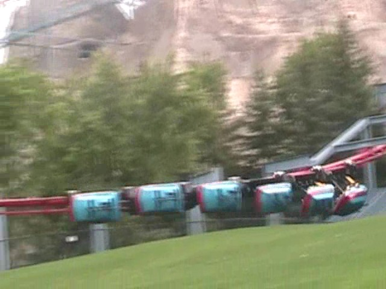
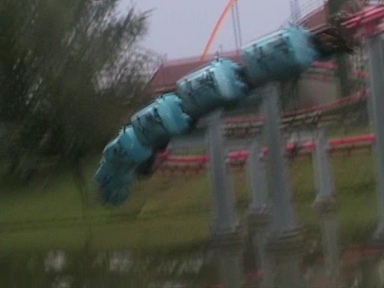

| |
Vortex Review

We're here at Canada's Wonderland. Today's ride we'll be reviewing for you is Vortex. Now Vortex is one of the few remaining Arrow Suspendeds left in the world (Why is it that there's only 1 Arrow Suspended left that I haven't ridden?). Anyways, after getting in the cars and pulling down the OTSRs, we're off. While we're climbing up the lifthill, all we see is the mountain. It's actually quite cool as it just looks like we're heading up really high up that mountain. We then crest the lifthill. It doesn't seem so high since we have the man made mountain right below us. We go around a turn. And there we see the "OH SH*T!!!" factor as we see the first drop straight into the grass. We dive and gain a lot of speed. But before we know it, we're flung to the side as we slam into one of the high speed curves. At this point, all you can think is "THIS IS AWESOME!!!". But then we rise up into a sort of high turnaround. It still flings us around as we are high above the ground. But before you know it, you're back at the ground swinging back from side to side. And yup. Next up is a turnaround. This turnaround really makes the cars swing and the turn afterwards just makes us swing like a mad man. After more swinging, we sort of curve into a downward helix. You rush with speed as you head straight towards the pond. After some more swinging, we just swing into the brake run where we get the last bit of swinging out before we realize our ride is over. Vortex is awesome!! Unfortunetly, Eagles Fortress closed down, so I'll never get to ride a suspended with orgasmic swinging. But I've currently been on 4 of the 5 existing suspended coasters and I doubt Vampire has that much swinging action, which would make Vortex the best suspended coaster ever (Well, that and Bat, but they're clones). But I still prefer this to the Bat due to the setting. I would TOTALLY recommend riding this if you're at Canada's Wonderland as it's not only the 2nd (most likely 4th now) best coaster in Canada's Wonderland, but it's also one of the few remaining suspended coasters left.
7/10
Location: Canada's Wonderland
Opened: 1991
Built by: Arrow
Last Ridden: August 7, 2008
I have ridden this exact same ride at the following parks.
Kings Island
Vortex Photos


Home
|